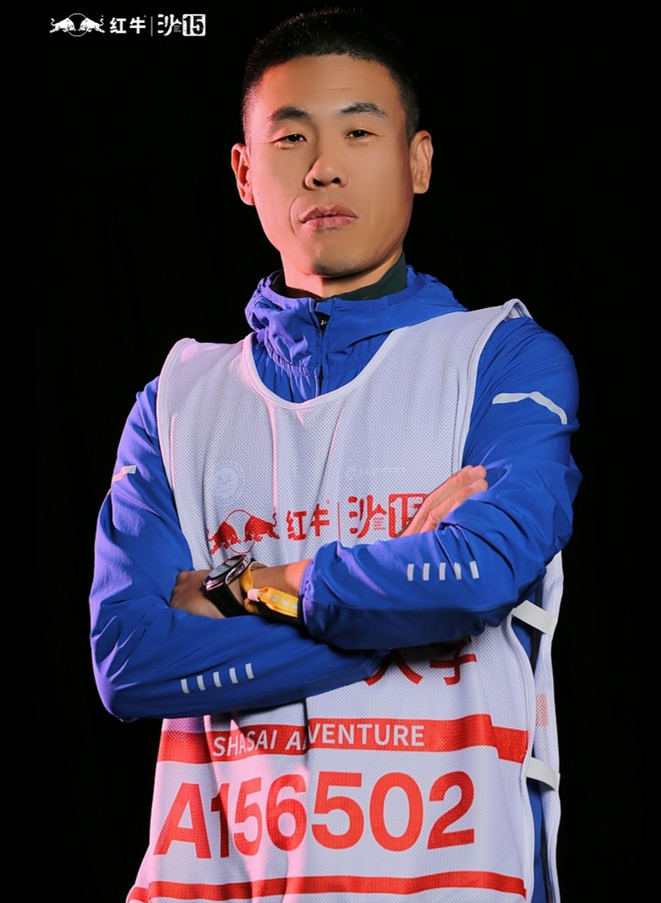

TRAIL RUNNER · MBA · BEIJING
JINSUO LIU
中国政法大学 MBA · 理工男 · 越野跑 / 马拉松爱好者
「保持热爱，奔赴山海」
About

我是刘金锁，一个把技术、求学与奔跑揉在一起的人。
本科就读于北京理工大学计算机专业，后又走进中国政法大学攻读 MBA——理工底色，叠加上商科的视野与方法；也是法大 24 级 MBA 校友会长。
典型的理工男，喜欢把复杂的工程问题，变成人能看懂、能决策的画面——可视化、虚拟现实（VR）与仿真，是我沉浸多年的方向。
工作之外，我是法大拓荒牛跑团的团长，也是一名资深越野跑与马拉松爱好者。从奥森的晨跑到崇礼的百公里，跑步教会我的，和翻山越岭一样：节奏、耐心，以及抵达之后的平静。
On the Move
跑步不是我的副业，是理解世界的一种方式。
3:26:39
全马 PB · 2026 青岛马拉松
100km
越野最长 · 2026 崇礼 168
A队
沙 / 草 / 龙 / 新 / 崇 多届商学院赛事
团长
法大拓荒牛跑团
保持热爱，奔赴山海。
Experience
出于合规与隐私，此处仅保留公开可陈述的履历轮廓。
虚拟培训系统的产品与研发管理，主导技术方案与质量体系建设。
可视化 / VR / 仿真系统行业解决方案；统筹华北、东北、西北区域销售与技术支持。
仿真、VR 与可视化业务的技术支持、方案设计与交付支撑。
技术与集成部门管理，统筹项目全流程实施与闭环。
北京理工大学 · 计算机科学与技术本科。
Get in Touch
欢迎就技术、越野跑或任何有趣的事，和我聊聊。